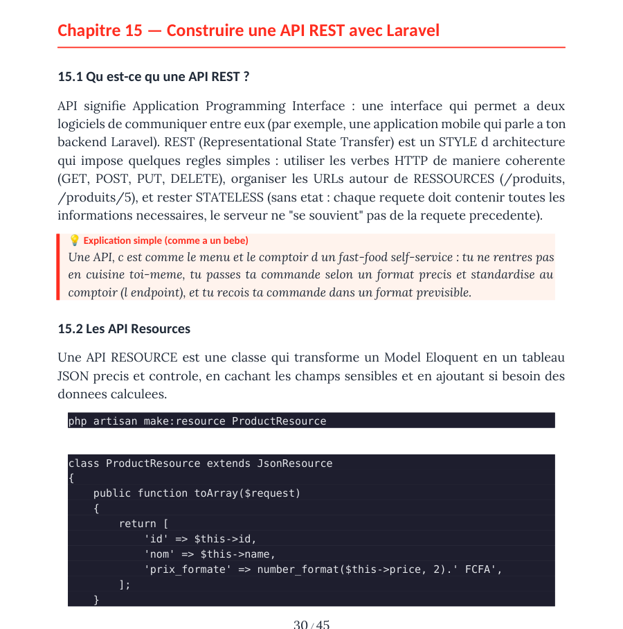
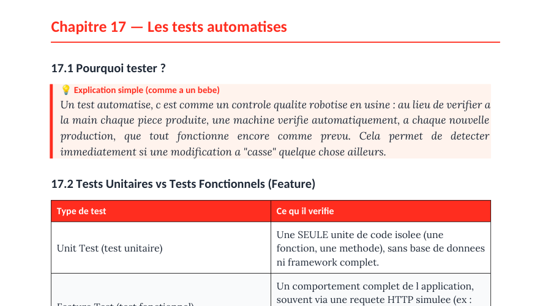
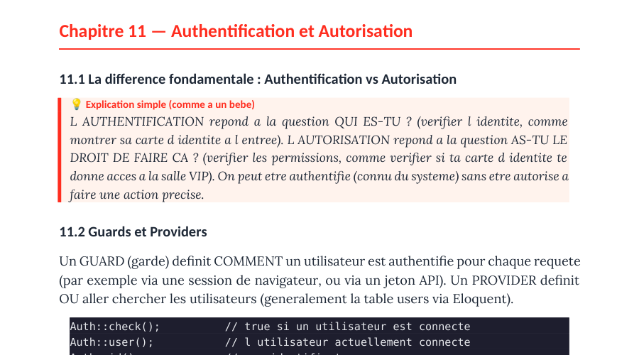

Comprends ce que tu construis.
Le guide promis dans la vidéo : API REST, tests et authentification, expliqués simplement. À lire ici ou à télécharger.
Tu fais sûrement ces 3 erreurs.
Touche une erreur pour la corriger.
Corrigées : 0 / 3
Les 3 sont corrigées. Pour que l’IA travaille vraiment pour toi, il faut savoir ce que tu lui demandes : c’est tout l’objet du guide.
Lire en ligneAPI REST, tests, authentification.
Les trois sujets promis dans la vidéo. Touche-en un pour l’ouvrir à la bonne page.

API REST
Les verbes HTTP, les ressources, les API Resources et la limitation de débit.
Les tests
Pourquoi tester, et la différence entre tests unitaires et tests fonctionnels.
L’authentification
Qui es-tu, et as-tu le droit ? Guards, Gates, Policies et les outils de Laravel.Voir les 24 chapitres
- 1Introduction : le monde du backend et de Laravelp. 3
- 2L’architecture MVC et le cycle de vie d’une requêtep. 5
- 3Installation et structure d’un projet Laravelp. 6
- 4Le routagep. 8
- 5Les contrôleursp. 11
- 6Requêtes, validation et réponsesp. 13
- 7Eloquent ORM et base de donnéesp. 15
- 8Blade : le moteur de templatesp. 21
- 9Les middlewaresp. 22
- 10Service Container, Service Providers et Facadesp. 23
- 11Authentification et autorisationp. 25
- 12Events, Listeners et Observersp. 26
- 13Jobs, queues et traitement asynchronep. 28
- 14Notifications et Mailablesp. 29
- 15Construire une API REST avec Laravelp. 30
- 16Stockage de fichiers, cache et sessionsp. 31
- 17Les tests automatisésp. 32
- 18Artisan CLI : les commandes essentiellesp. 33
- 19Les design patterns de Laravelp. 34
- 20Glossaire du jargon backend, de A à Zp. 35
- 21Problèmes courants et leurs solutionsp. 40
- 22Questions d’entretien fréquentesp. 42
- 23Se préparer à un entretien backendp. 44
- 24Pour aller plus loinp. 45
Gratuit, sans inscription.
Le Guide Complet du Backend Laravel, en PDF : 45 pages, 0,5 Mo.